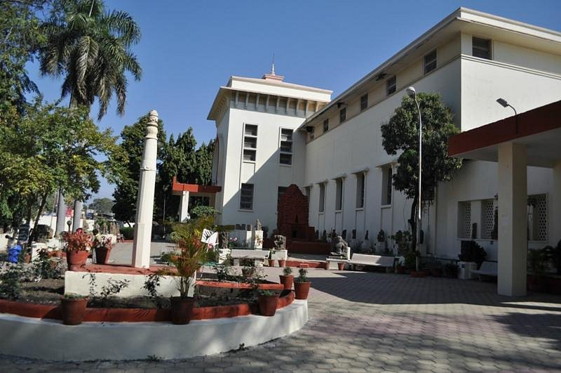

Indore Museum
Indore Museum, also known as the Central Museum, is the largest museum in Indore. It houses a diverse collection of artifacts, including sculptures, coins, weapons, and paintings, depicting the rich history of the region.
Visitors can explore the museum's exhibits and learn about the cultural heritage of Madhya Pradesh.
